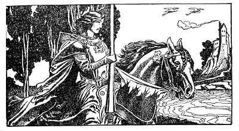

Sacred Texts Sagas & Legends England
|  |
The Story of the Champions of the Round TableWritten and Illustrated by Howard Pyle[1905] |
This is Howard Pyle's retelling of the legends of three of the most illustrious knights of the Round Table, Sir Lancelot, Sir Tristram and Sir Percival. This etext preserves all of the lavish drawings, also by Pyle, which go a long way towards establishing the atmosphere of the narrative.
Title Page
Foreword
Contents
List of Illustrations
Prologue
Part I. The Story of Launcelot
IntroductionChapter First
Chapter Second
Chapter Third
Chapter Fourth
Chapter Fifth
Chapter Sixth
Chapter Seventh
Chapter Eighth
Conclusion
The Book of Sir Tristram
ProloguePart I. The Story of Sir Tristram and the Lady Belle Isoult
Chapter FirstChapter Second
Chapter Third
Chapter Fourth
Chapter Fifth
Chapter Sixth
Chapter Seventh
Part II. The Story of Sir Tristram and Sir Lamorack
IntroductionChapter First
Chapter Second
Chapter Third
Part III. The Madness of Sir Tristram
IntroductionChapter First
Chapter Second
Chapter Third
Chapter Four
The Book of Sir Percival
IntroductionPrologue
Chapter First
Chapter Second
Chapter Third
Chapter Fourth
Chapter Fifth
Conclusion
![g'.г.Ail maiden ©uмонетი: ℞ubli© ძ'ommAin 🖼 ImageI by 'Art'hur R_AckHÅm' & All inclusive names to my Roots && me, me I.B.M.l. ასლაჼ კლდიაშვილი, А©ЛАჼ ©КЛიДиÅWвიЛи [1922], @novadays ი.ბ. АйбоЛит [Aibolem МЕЛОДИЯR₾ი მო'სი'კვÅჼ]](https://barionleg.github.io/db-sacred-texts.li/neu/ba_geo_f.png) |